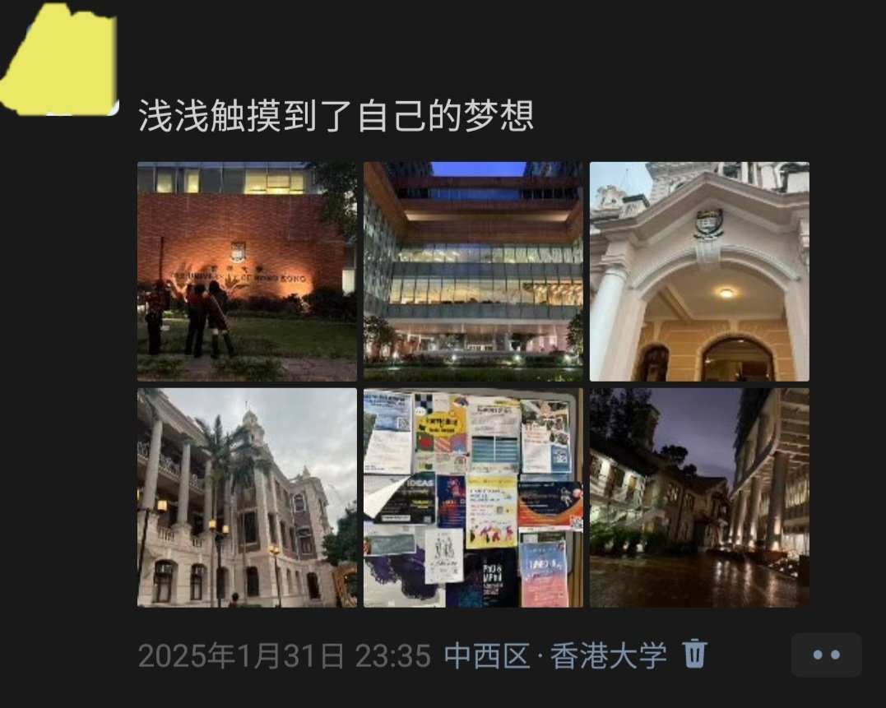

星野ふじ
@hoshinofujivy
#小藤闯世界
2025年一月底，我第一次来香港，那时的香港很陌生，让我对外面的世界很恐惧
如今再次来到这里，反而是我躲避痛苦的地方：自由与秩序并存，人人都有边界感，各种语言文化背景的人汇聚于此，空气很舒服，没有二手烟
最重要的是，我见到了很多朋友
真的很喜欢香港，有点舍不得这里（眼角湿润）
我明天就要出发去东京了，那边也有很多可爱的人在等我

星野ふじ
@hoshinofujivy
其实大家不需要羡慕我出国旅行
我并不是什么富裕家庭，只是父母比较开明，不会干涉我的事情
出国旅行的这笔经费，是我打工攒了几个月存下的钱，麦当劳兼职，送外卖，做家教，修理铺当学徒.....每一笔账都算的很精细，从未向家人索要一分钱